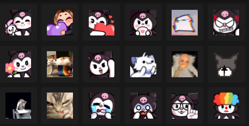

Kelly, Kells, Kellsita; como prefieras llamarla, es una estudiante de LTI, aficionada al teatro, futbol americano y claramente a hacer streams.
Actualmente tiene 19 años, de los cuales, dos se ha dedicado a manera de hobbie a crear contenido en la plataforma Twitch, su contenido se basa en hacer dinamicas con su comunidad, hacer gameplays con juegos como roblox, minecraft o algun otro de moda, aunque tambien se le ha visto haciendo streams IRL o de cocina.
Al suscribirte al canal de Kells puedes recibir beneficio como lo son:
- Emotes
- Insignias personalizadas
- Ver el stream sin anuncios
- Poder hablar en ocaciones donde se active el modo suscriptores
Emotes del canal

Insignias de suscripción
Estas cambian cada cierta cantidad de meses para reflejar el tiempo de suscripcion acumulado en el canal
Horario de streams
| Lunes | Martes | Miercoles | Jueves | Viernes | Sabado | Domingo |
|---|---|---|---|---|---|---|
| ✅ | ✅ | ✅ | ✅ | ✅ | ❌ | ❌ |